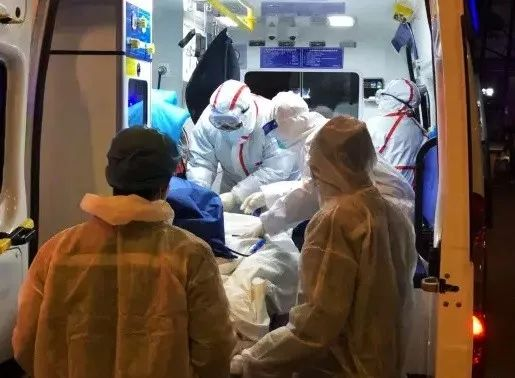
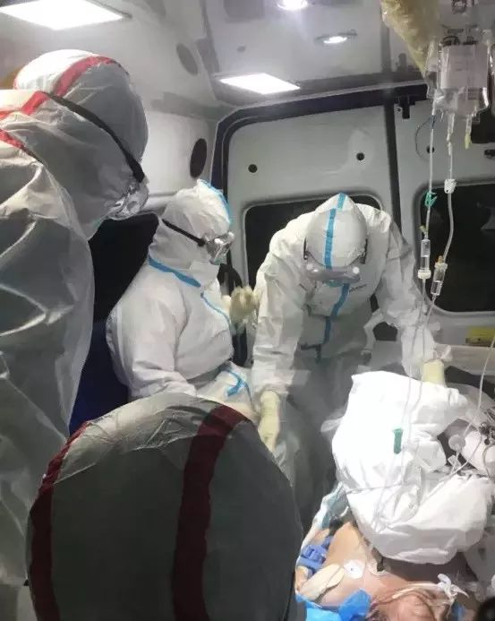
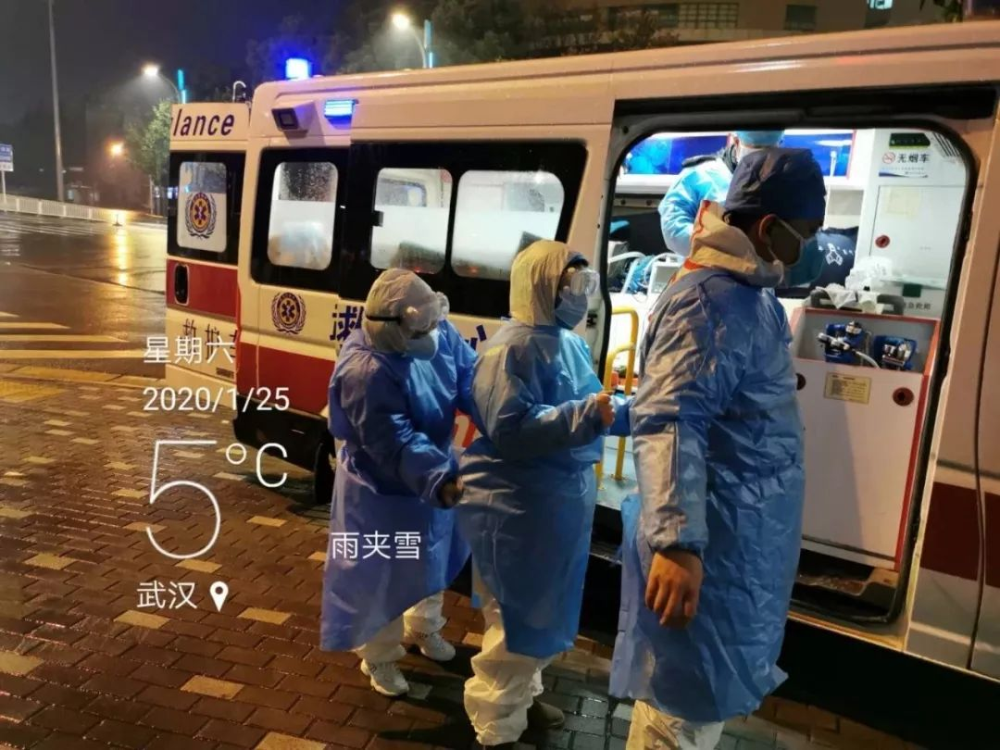
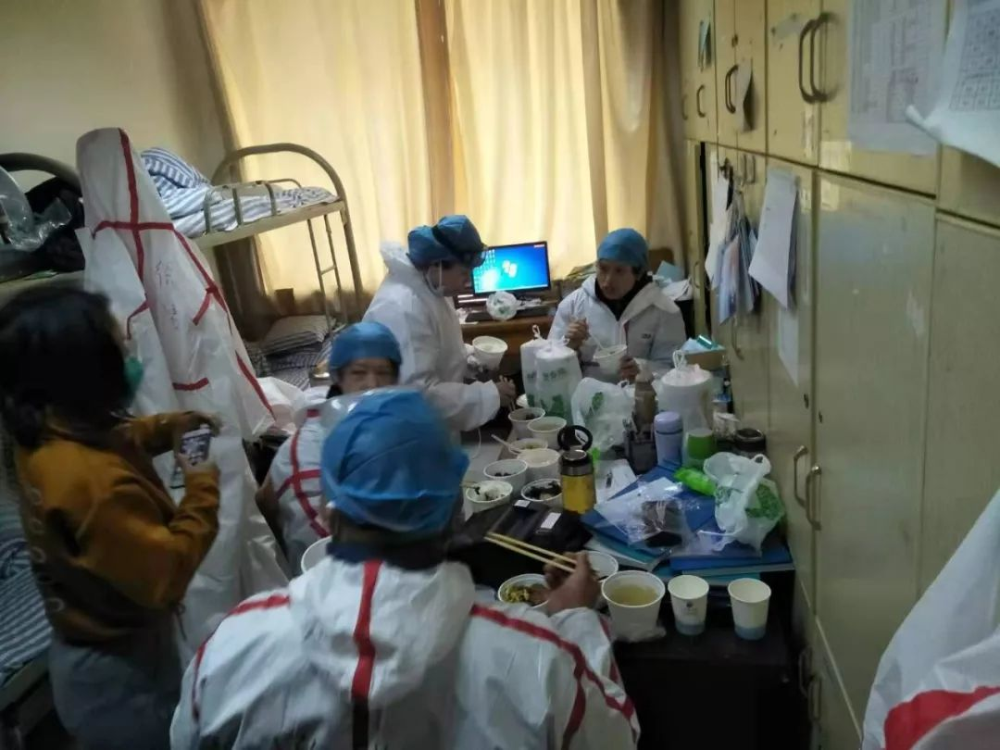

同志情侣在疫情一线|“生命所系，性命相托。我守百姓健康，你守一方平安”
原文链接 备份链接 “招呼好乐乐、可可。”登机后，晓阳立即给男友林峰发了微信，不放心他们一起养的两只宠物，其实是更不放心男友。 “你才要照顾好自己。” “要登机了吗？” “那俩小的你不用担心。” “一落地记得给我打个电话。” 男友光速回 …

“我们现在只希望病人有地方救治，床位实在是紧张，没有床位是我们急救站工作人员每天都遇到的困难。” 一位急救站的站长说，“我们不怕出车多，就怕病人送到医院没床位。”
全文5246字，阅读约需10.5分钟

▲急救人员工作中。受访者供图
新京报记者 王双兴 编辑 胡杰 校对 李立军
2月3日，10辆配备了便携式呼吸机、氧气瓶等医疗设备的负压救护车搭载着首批重症患者陆续抵达火神山医院。
32岁的陆遥是其中一辆救护车的司机，夜幕降临时，他在医院门口和同事拍了合影。照片中的他左手握拳举在胸前，救护车停在身后，车顶的蓝色警示灯闪闪发光。
过去的几十天里， 这些救护车灯日日夜夜闪烁在武汉的街道上，连接病患和医院。
56岁的向阳也是一位救护车司机。天命之年，依然工作在救援一线。他说，见遍生死，有时候也无能为力，只能一趟一趟出车，跑在路上，把自己的工作做好。
他把自己的社交媒体主页背景换成了站在救护车前的照片，资料栏写着：一辈子都在与死神赛跑。
━━━━━
24小时踩紧油门
1月31日凌晨0点37分，值班室的求救铃响起，向阳接到急救中心调度员的电话，要到江汉区接一位新冠肺炎的疑似病例。
迅速通知医护人员，穿好防护服、隔离服，戴好口罩、护目镜等，他们在4分钟内出发了。
一名医生，一名护士，一名司机，两名担架员，组成一个急救单元组，是每辆救护车上的标配。为了节省时间，和求救方核实地址、询问病情等工作，全在路上进行。

▲转运病人时在急救车上照顾患者。受访者供图
接电话的是患者的女儿，带着哭声喊“你一定要来”。当时，她64岁的母亲已经陷入昏迷。
住处位于一片老式居民区，路封了，向阳兜兜转转才把车开到附近，担架员走小路过去，穿过狭窄的楼梯，把患者抬到了救护车上。
患者的女儿跟在一旁，止不住咳嗽，她说，此前几天自己一直在发烧。医生判断，她可能也被传染了，建议同去医院做检查。五六岁的孩子一个人留在家里。
向阳说，很多家庭出现不止一个疑似病例，有的是两例，有的则更多。
向阳的一位司机同事曾对媒体回忆，1月28日，他和团队成员接到报警后赶往汉口。求救的是一个三口之家，司机问：哪个是病人？对方回应：三个都是。
关上车门，向阳把救护车朝最近的医院开去。医护人员在驾驶室后面的车厢中，给患者做心电监护、测量血氧、上呼吸机。
短促的敲击玻璃的声音响起来，向阳回头，医生朝他做手势：六，零。这意味着血氧浓度降低到了60（人体正常含氧量为90%左右，血氧浓度过低有生命危险），医生提示他开快些，情况紧急。
向阳踩紧了油门。
这一天，和此前的许多天一样，向阳共转运了近20位患者。急救中心的工作人员实行三班轮换，连续工作24小时，休息两天。在疫情发生前，一个班（24小时）一般转运七八位患者。
武汉市急救中心工作人员朱康告诉记者，以往，整个武汉市急救中心每天接到的电话求助在3000左右，如今，这个数字超过了10000，最多曾达到15000。患者多的时候，每天打120的人要排队至少600位。
不止一位患者在见到向阳后说：“前面有几百个人排队，终于排到我了。”
于是，和向阳一样的急救工作者，不眠不休地奔波在路上。他们分布在全市各地的57个急救站中，接到急救中心的调度指令后，驾驶着87台救护车、10台负压救护车，把一批又一批患者送到医院。
司机陆遥驾驶的是武汉10台负压急救车之一，负压车可以最大限度地减少医务人员交叉感染的几率，并将车内的空气进行无害化处理后排出，因而，大多被用来转运确诊病例。
1月17日起，陆遥参与了第一批确诊病人的转运工作，将各个医院的病人转运到定点医院。2月3日，又参与了将病人转运到火神山医院的工作。

▲2月3日，陆遥和同事在火神山医院的合影。受访者供图
━━━━━
“我们不怕出车多，就怕病人送到医院没床位”
1月31日凌晨，向阳载着患病的母女向医院驶去。蓝色警示灯闪烁在江城的夜色里，由于路上的车辆不多，警笛声已经很少响起了。
1月23日，武汉宣布“封闭离汉通道”，紧接着，中心城区实行机动车禁行管理。整个城市变得安静下来，向阳开着救护车行驶在路上，路上再也没有堵车的情况，甚至很少能看到其他车辆，偶有的几辆，除了运输车、接送医务人员上班的交通车、公务用车，剩下便是和自己一样的救护车了。平日里，街头偶尔走过三两个人影，基本是外出买菜的市民，帽子口罩，严严实实。
将病人送到最近的医院后，家属被告知医院早就没有床位了，到门诊挂号，当天的号也已经挂满了。
救护车上的医生去和医院的医生交涉，说着说着甚至要吵起来。向阳陪家属在一旁等候，他回忆：“大家都是医务人员，规则和道理都懂，但是看着病人昏迷在那里，大家都着急。”
最后，经过交涉，医院同意给昏迷的老人先挂号。向阳跑去找来三个板凳，并排放好，然后和担架员一起把老人抬到板凳上，等待接受医院的治疗。

▲急救人员工作中。受访者供图
向阳和同事们没有太多停留时间，还有下一个任务等着，他们必须尽快把车开回急救站消毒，然后赶去转运下一位病人。
离开的时候，向阳回过头看了一眼，老人昏睡在板凳上，女儿靠在一旁，用手抱着母亲的头。
“那个女孩子跟我丫头大不了多少。”向阳说，当时眼泪就流下来了。医生在一边挺吃惊：“你看过这么多了，还这样。”
向阳说，疫情暴发以来，他每次出车自己心里都急，担心把病人送到医院后住不成院、挂不上号。
几乎每个急救中心的工作人员，都曾被诸如此类的无力感裹挟。司机们说，有时候，他们甚至要拉着病人“跑好几趟”，一家医院无法收治，就赶忙送去下一家医院，无论是病床、留观床位，还是发热门诊，都已经人满为患。最多的时候，病人被向阳载着连续跑了三家医院，最终由医生协调入院。陆遥曾载病人连去四家医院，直到第四家得以挂上号。
“我们现在只希望病人有地方救治，床位实在是紧张，没有床位是我们急救站工作人员每天都遇到的困难。” 一位急救站的站长说，“我们不怕出车多，就怕病人送到医院没床位。”
她回忆，有时候，救护车拉着病人，连送几家医院都没有办法收治，急得车上工作人员到处求救，“先给急救中心打电话，没办法就给我打电话，我就求助我们科领导，看能不能先到我们医院发热门诊看看。”（多数急救站附属于某家医院的急诊科，由该医院和急救中心共同管理。）
━━━━━
防护物资要“省着用”
1月20日晚，国家卫健委高级别专家组组长、中国工程院院士钟南山接受央视新闻采访时表示：根据目前的资料，新型冠状病毒肺炎是肯定的人传人。第二天起，和向阳一样的一线急救人员开始启动三级防护。
到了1月下旬，向阳和同事们变得越来越忙，往往刚刚送完上一个病人，尚未回到急救站，就接到下一个任务，完成消毒后，立刻出发。
消毒是新冠肺炎防治中的重要环节。转运完一个病人，救护车的每个角落都要进行一次消毒。先用75度酒精，再用消毒水，最后打开紫外线消毒灯，消毒半小时。
严格来说，口罩、防护服等也是一次性的，完成一次转运，应该换一次防护设备。但是特殊时期，只能“省着用”。
防护服的胶是一次性的，想要反复穿，只能小心翼翼地撕开一个小口子，小心翼翼地脱下来，用酒精和消毒水处理一遍，再挂到紫外线灯下消毒，下一次出车继续穿。
向阳的一套防护服往往要穿“两趟班或者两趟半班”，也就是48小时到60小时。隔离服相对充足，大家便把它穿在防护服外，每上一趟班，可以换一件新的隔离服。

▲出车前，急救人员在防护服外穿上一层隔离服。受访者供图
向阳是站里年纪最大的，“大家都很照顾我，我基本上两天换一个N95口罩，他们年轻的好像都没有这么快换，一个口罩有时候要戴三天到四天。”为了保障防护，每个人一趟班会再发两个外科口罩。
向阳看到过护士长去和院长要防护物资，“吵一架，哭着回来”。过后又都理解：医院还有发热门诊、感染科、隔离病房，大家都在一线。
武汉市急救中心工作人员朱康说：“目前整个急救中心的防护物资还是不足，尽管有些物资陆续送达，但是缺口还是很大。”
朱康介绍，和医院不同，急救中心对防护物资的需求更高，理想状态下，为了防止交叉感染，每转运一次病人，急救工作人员就应该换一次防护服。
他保守计算：整个急救中心共有57个急救站，每个站每天接收病人超过10次，有的达到20 多次。按照12次计算，每天必须有680次出诊；按照目前75%是发热病人计算，也需要480套防护服；每箱50套防护服，每天至少要10箱。
但事实上，急救中心的防护物资并没有定量供应。“上面筹集到，就下发。如果没有，他们自己想办法。”朱康说，“只能发动站长各自想办法，有的能力强，就筹集得多，有的少。”
一位站长说，疫情防控一开始的时候，几乎所有站点的防护用品都是非常匮乏的，大家想了各种办法，天天去医院库房找能够用的防护用品；一听说急救中心通知领物资，也立刻马不停蹄地赶过去，生怕去晚了领不到。
如今，来自各地的防护物资陆续送往武汉，有的急救站有了充足的护目镜和防护服，但缺少N95口罩；有的站物资依旧紧缺，需要四处求助；陆遥所在的站物资情况较好，平均每转运三四趟病人，可以换一套防护服。

▲有网友给向阳寄来了防护用品。受访者供图
━━━━━
“后面就是祖国和家人，你退了他们怎么办？”
疫情暴发时，向阳原本可以不回武汉。
1月22日，腊月二十八，他送女儿到北京学习。夜里，武汉市肺炎疫情防控指挥部发布第1号通告称：自2020年1月23日10时起，全市城市公交、地铁、轮渡、长途客运暂停运营；机场、火车站离汉通道暂时关闭。紧接着，武汉“封城”的消息在互联网上铺天盖地。
返回武汉的航班被取消了，向阳一边联系单位，一边联系北京铁路局，最终上了一班北京到珠海的高铁，他和车长说：“我是医务人员，得回去。”旁边的乘客接话：“别下，都这样了，你还赶回去干吗？”向阳坚持，最后途经武汉时，一个人下了车。
“我是当兵的出身，受到的教育就是这样，不能退，后面就是祖国和家人，你退了他们怎么办？”
他和他的同事都没退，直到今天，依然开着那辆白色救护车，穿行在武汉的大街小巷。

▲急救站的工作人员在值班室吃饭。受访者供图
如今，向阳所在的急救站，40余个工作人员中，已有4人出现新冠肺炎症状，正在医院隔离治疗，等待确诊。他们居住的隔离病房所在的楼层，收治的大都是本医院中被感染的医护人员。
急救中心工作人员朱康介绍，现在，除了个别几个急救站，其他站里“都有人中招”。其中有一个站因为司机感染，站长只好找了临时司机，“跑了一次车，感觉太吓人，就不干了。”
最近，和向阳同站的一个担架员也“不干了”。担架员大多来自武汉周围县乡，关闭离汉通道之后，很多外地的担架员回不来，一旦出现空缺很难补上。同组只剩一位担架员，只能由司机或者医生临时兼任。“现在一个也不能缺。”向阳说。
从一月中旬开始，因为工作量增加，加之担心万一感染病毒传染给家人，各个急救站的工作人员统一住在单位。每间值班室有上下铺两张床位，不够便腾出储物室用来住人，还不够，就住在医院给工作人员安排的酒店里。
交通管制后，人们对120救护车的需求上升，向阳和同事们变得更忙了。不过他也遇到过不止一次，有人打电话给120声称病人已经昏迷、神志不清、抽搐，救护车到达后，病人自己从楼梯上走了下来。
工作时间，急救中心的工作人员们24小时忙在一线；休息时间，也要用来消毒和搬运物资。一位急救医生在工作笔记里写：现在，我们的工作量越来越大，原来一个班出7-8次车，现在一个班出14-15次已经是常态了，基本上每出一次车，消完毒就马上要出下一次车了，夜晚想安稳地睡一两个小时完全是奢望。
有的急救站工作人员平均年龄超过50岁，最年轻的护士还是1976年出生的，如今依然全部在岗，日夜奔忙。火神山医院已经开始接诊，雷神山医院马上落成，一线的工作人员经常念叨：“就要好起来了吧。”

▲从一周前开始，当地的一家快餐店每天给值班的二十余个工作人员送免费午饭。受访者供图
司机陆遥的爱人独自带两个小孩在家。休班的时候，他会在吃饭时和家人视频，6岁的女儿对病毒没有概念，抱着手机告诉爸爸今天写完作业后弹了钢琴，还练了舞蹈；一岁出头的二宝则只会在一旁咿咿呀呀。每次通话结束前，爱人总会接过手机，反复唠叨“防护一定要做好”。半个月前，她想劝陆遥别去工作了，陆遥回应：“这个时候，怎么可能。”
向阳说，工作的时候，顾不上吃饭是常事，午饭下午四五点吃，晚饭直到夜里十一二点吃，都很常见。找不到营业的餐馆，就买来泡面充饥。还有时候忙着出车，甚至一天都吃不上饭。
一周前开始，当地的一家快餐店每天给值班的二十余个工作人员送免费午饭，一荤一素两个菜，外加一碗汤。每份饭的包装袋上都贴着一张便签，是店主誊抄的网友祝福：“一切都会好起来的。”“请保护好自己。辛苦了。”“你们守护患者，我们守护你，别忘了还有人等你回家吃饭，请平安归来。”收到餐的第一天，同组一位护士当场就哭了。
向阳把它们逐一撕下来，工工整整，贴在值班室的桌子上。
（向阳、陆遥、朱康、林田为化名。）
点击下图进入”全国新型冠状病毒感染肺炎实时地图“

*值班编辑 花木南*


本文部分内容首发自新京报公号“剥洋葱people”
未经新京报书面授权不得转载使用
欢迎朋友圈分享

原文链接 备份链接 “招呼好乐乐、可可。”登机后，晓阳立即给男友林峰发了微信，不放心他们一起养的两只宠物，其实是更不放心男友。 “你才要照顾好自己。” “要登机了吗？” “那俩小的你不用担心。” “一落地记得给我打个电话。” 男友光速回 …
原文链接 备份链接 口述 |武汉市肺科医院ICU主任 胡明 采访 |潇湘晨报记者 耿志方 温艳丽 廖如云 记录 |实习生 赵鸿婕 朱文静 杨丽英 谭思慧 林颖娴 对于胡明来说，他根本没空看疫情的新闻，哪怕是春晚，除夕和初一都没来得及在同事 …
原文链接 备份链接 走进武汉金银潭医院，第一感觉是安静。与在武汉闹市区其他综合类的三甲医院不同，这家传染病专科医院，楼与楼之间隔得很远，种了好多树，即使在冬季也是郁郁葱葱。收治了几百位新型冠状病毒肺炎患者的住院楼，门窗紧闭，站在楼下几乎听 …
原文链接 备份链接 【财新网】（记者 萧辉）一边是抗疫一线医院的医护人员急缺口罩、防护服，一边是红十字会仓库堆积大量社会捐献的医疗物资，近日武汉市红十字会因为发放捐赠物资速度缓慢、程序繁杂引发武汉多家医院医护人员和公众的不满。今天（2 …
原文链接 备份链接 武汉交通管制后，路面上都是120的车子不停地跑，极少有私家车及的士 （摄影：远征、高星） 武汉从没有如此空旷，市民们避居在家，只有医院人口密集。 疫情还在扩散。 根据湖北卫健委的数据，1月29日0时-24时，湖北省新增 …